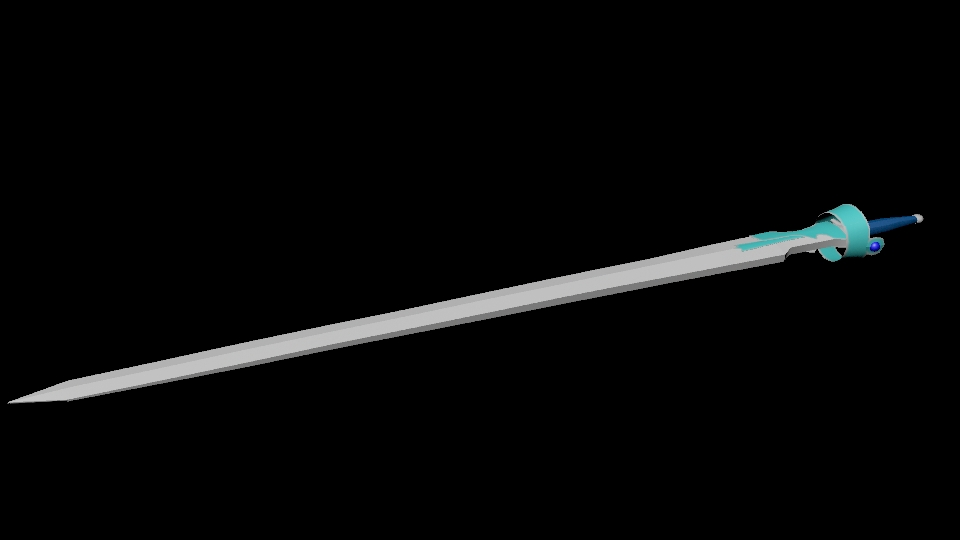
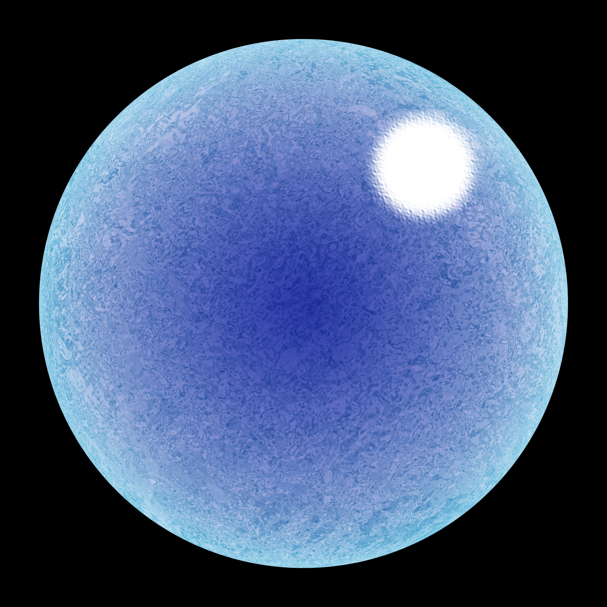

ランベントライト
ソードアートオンラインに出てくるヒロインの結城明日奈の細剣です。持ち手の部分が大変でした。

小屋
mayaで制作した小屋です。作られたものを参考にして、参考画像に近づくように頑張って作りました。流れている川の水に色が水色だけではなく色の表現が難しかったのと、家の形をシンプルな小屋ながらも微妙に傾いている部分などが苦労しました。

2Dエフェクト
水のエフェクトをphotoshopで描きました。webサイトを見て作りました.photoshopのツールについてもさらに理解できました。これ以外にも炎のエフェクトや斬撃エフェクトなども作りました。